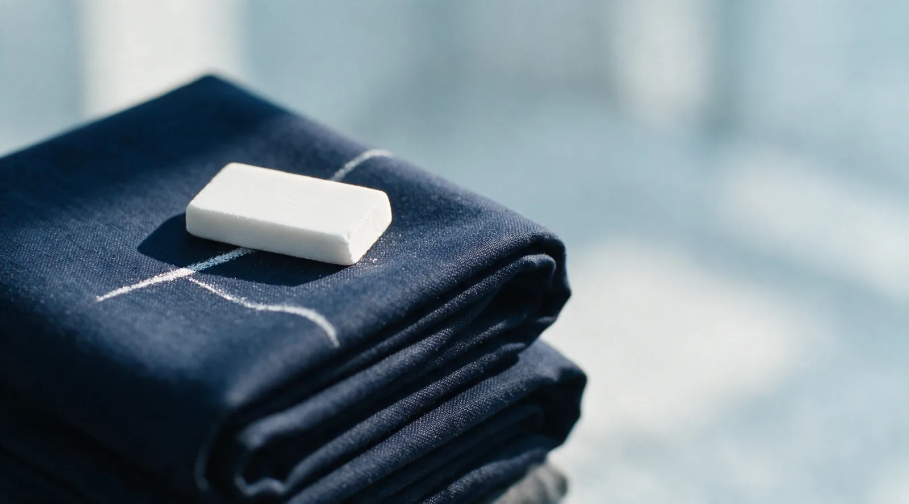
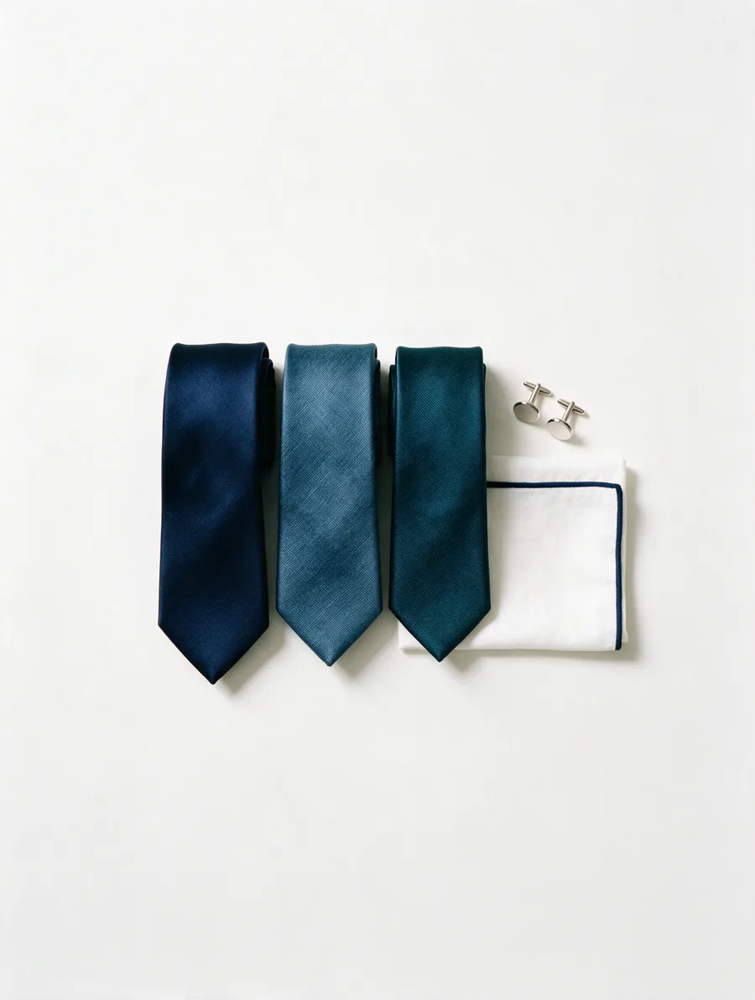

Weddings
The look should match the moment. Fitted around your timeline.
Suits, fittings, and alterations on Main Street in Holden.
1363 Main St, Holden, MA · 4.7★ on Google
A wedding in three weeks.
Prom on Friday.
An interview Tuesday morning.
A funeral tomorrow.
Whatever the day is, the suit should be the easy part.
No guessing through racks alone. Tell Gabriel the occasion, and he guides the suit, the fit, and the finishing pieces so the whole look comes together in the shop.

The look, the fit, and the day itself. Handled.
Menswear for the days that matter
Gabriel handles the rest.
The look should match the moment. Fitted around your timeline.
Stand out for the right reasons, even on a short deadline.
A suit that fits reads as confidence before you say a word.
Already own the suit? Sleeves, hems, waist, break, and balance, checked in person.

Shirts, ties, pocket squares, vests, and the details that pull it together.
Real reviews from the shop's Google profile.
“A great selection of beautiful suits”
“Amazing personal service and a great selection of beautiful suits! It's the kind of shop you keep going back to to build your wardrobe, from business casual to formal.”
“Alterations are perfect”
“Turn around for alterations was 3 days, and alterations are perfect. I will definitely be visiting again as I update my business casual and formal wear.”
“Great selection at very good prices”
“The store has great selection at very good prices… was able to navigate a quick turn getting the suit altered. Shop local.”
“Fast turnaround for alterations”
“Best personal service one can ask for. Huge inventory and fast turnaround for alterations. Highly recommend.”
“Looking sharp”
“Outstanding service! These guys know how to get you up to speed and looking sharp while forging a true connection with their customers.”
“A few quick measurements”
“With a few quick measurements and several excellent recommendations, I left with several different shirts, 2 ties, a new belt… would highly recommend this place.”
“Walked away happy”
“The perfect combination of helping, guiding, and giving us space… My husband walked away happy with his new outfit.”
“Very high quality”
“The pants are very high quality cotton and suits and everything is very stylish… Fantastic store and I highly recommend it.”
Gabriel learned tailoring from his mother in Turkey and has spent more than thirty years fitting suits, jackets, trousers, and formalwear for the moments people remember.
From trouser break to jacket balance, Gabriel looks at the fit in person and catches the things a rack or online order cannot.
If alterations will help, he will show you why. If a garment is not worth the work, he will tell you before you spend the money.
Yes. Walk in and tell Gabriel what the occasion is. He can guide the suit, fit, and finishing details from there.
Yes. Gabriel can check a suit you already own and tell you whether alterations are worth it before you spend money.
Yes. Gabriel can help with the look, fit, and alterations for the timeline you are working with.
Pricing depends on the garment, fabric, and work needed. You will know the options before committing.
Call or stop by. A quick visit can answer the big questions.